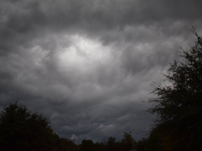

Home
Earthquake Rocks Wasatch Front Felt in Franklin County
By NECIA P. SEAMONS The Preston Citizen editor Mar 18, 2020
A 5.7 earthquake woke residents of Utah this morning and some in Franklin County, too.
The U.S. Geological Service reports that the earthquake was centered four miles NNE of Magna, Utah, and measured at 6.6 miles deep at 7:09 a.m.
Over a dozen aftershocks have followed and more are expected throughout the day. They have ranged fro 2.8 to 3.8 on the Richter scale. A second one was felt in Franklin County at 8:03 a.m.
Utah Power is reporting a power outage in the Magna area affecting 12,000 people.
KSL News is reporting that this is the biggest earthquake to hit the Wasatch Front since 1992.
Locally, people are reporting that they felt their beds shake, lights swinging and porch chimes ringing.
Facebook posts note people feeling the temblor from Burley to Star Valley and south to Utah Valley.
Lyle Porter of the Consolidated Irrigation Company (CIC) said the water companies always check dams at local reservoirs when an earthquake happens. Glendale, Foster, Johnson and Lamont reservoirs, managed by the CIC remained undamaged, he said.
Pacificorp says everything checked out at the Oneida dam as well.
Representatives of the Twin Lakes Irrigation Company has been reached yet.
Contact Us
Address:
The Weather Center
123 Main Street
Franklin, ID 87654
Phone:
(801) 555-1234
Email:
contact@yoururl.com